在既有晶格與準晶格結構光場中，如何進一步將空間尺度引入為新的自由度，並探討不同階層尺度上的 Q-fold symmetry 如何形成多尺度結構？
UNDERGRADUATE RESEARCH · OPTICS
Exploringstructured lightthroughmulti-beam interference.
Complex light with self-similar and embedded quasiperiodic structures by multibeam interference.
01 — Experiment02 — Simulation03 — Analysis
Hierarchical construction across successive spatial scales
01 / OVERVIEW
One project,
built layer by layer.
本研究以遞迴多光束干涉建立階層式結構光場：每增加一個 Q-fold 對稱階層，就加入一個新的結構調制尺度。模型與數學形式可拓展至第 N 階；實驗以光罩作為篩選特定位置的波源達成多光束干涉，並完成至第三階。
以 QN 定義各 order 的 rotational arrangement、RN 定義 spatial scale，逐階建立 hierarchical source distribution，並以數值模型重建對應干涉光場。
以光罩篩選特定位置的波源形成多光束干涉，並以 MATLAB reconstruction 重建對應光場，直接比較實驗與數值結果及其跨尺度結構特徵。
02 / RESEARCH JOURNEY
From symmetry
to a recursive model.
這段研究從既有晶格／準晶格結構光場出發，進一步把空間尺度引入為新的自由度。透過階層式波源排列逐階加入不同結構尺度，再由近場空間分布、遠場結構與數值模型之間的關係，建立可拓展至第 N 階的 recursive interference framework。
01
RESEARCH QUESTION
How can spatial scale become an additional degree of freedom in crystalline and quasicrystalline structured light?
在既有晶格與準晶格結構光場中，進一步將空間尺度引入為新的自由度。透過階層式波源排列逐階加入不同結構尺度，使原有 Q-fold 結構延伸為多尺度干涉結構。
1st-order→2nd-order→3rd-order
02
RECURSIVE MODEL
Each added order introduces a new structural scale.
每一階以 QN 決定環形波源的 rotational arrangement，並以 RN 設定對應的 spatial scale；新的環形分布再以既有波源位置為中心逐階展開，形成 hierarchical source distribution。
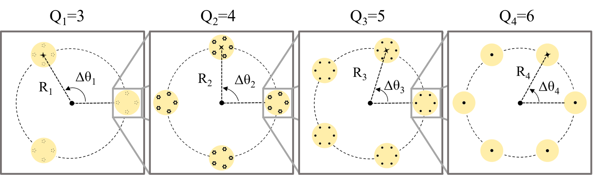
SOURCE-POSITION CONSTRUCTIONθN,SN = 2π(SN − 1)/QN, SN = 1, 2, …, QNPS(x,y) = ΣN RN,SN = R1,S₁(cosθ1,S₁, sinθ1,S₁) + ⋯ + RN,SN(cosθN,SN, sinθN,SN)
在此共同的 source geometry 上，可進一步以 Gaussian-beam propagation 或 plane-wave formulation 重建干涉光場，並將模型延伸為通用的 Nth-order formulation。
03
TWO MULTISCALE REGIMES
Same Q repeats. Different Q changes what appears across scale.
SAME QRepeated symmetry
相同 Q-number 配置在不同階層尺度，形成 self-similar structure。
Q₁ = Q₂ = Q₃ = 5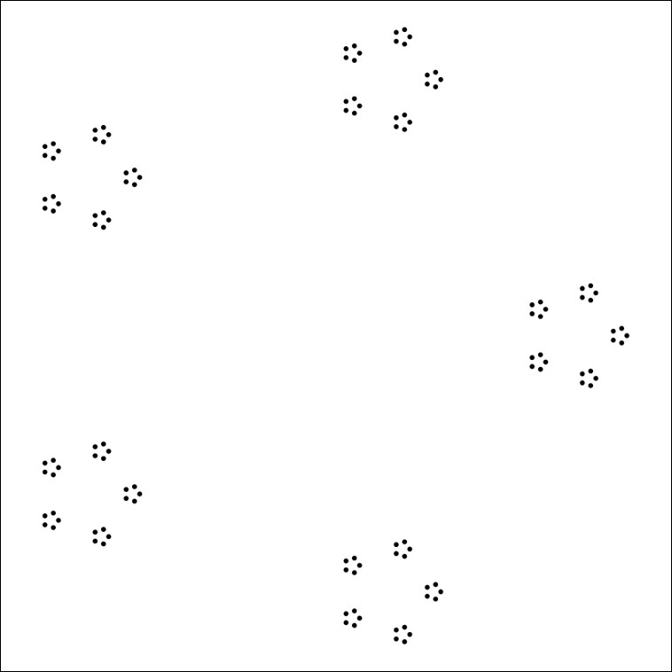
DIFFERENT QEmbedded symmetry
不同 Q-number 分布於不同階層尺度，改變觀察尺度時呈現不同 rotational symmetry features。
Q₁ = 5 · Q₂ = 4 · Q₃ = 3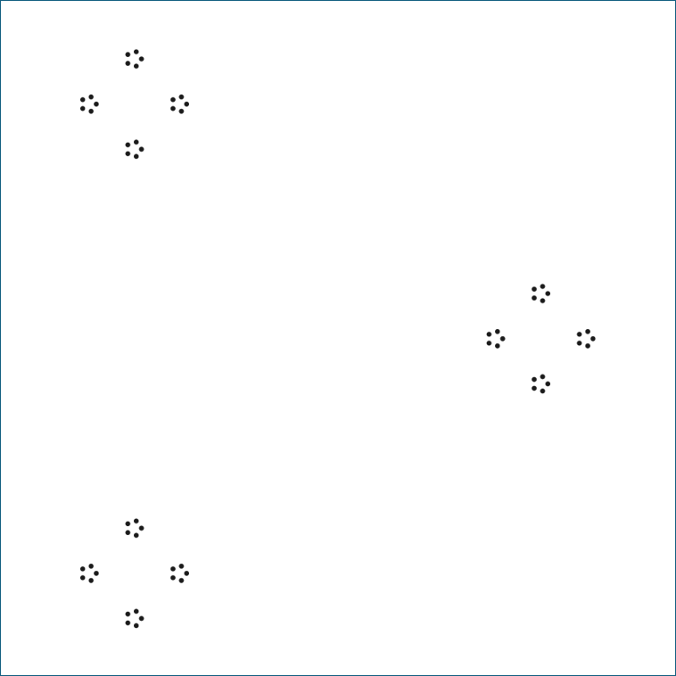
04
EXPERIMENT × SIMULATION
From photomask source geometry to reconstructed fields.
以光罩篩選特定位置的波源形成多光束干涉，並以 MATLAB reconstruction 重建對應光場。Same-Q 與 Different-Q 三階結構提供實驗與數值結果的直接比較。
05
RESEARCH BOUNDARY
Experiment to 3rd-order · Model extends to Nth-order
實驗完成至第三階，模型與數學形式可拓展至第 N 階。
ORDER
1—2—3—4⋯N
Experiment → 3rd-orderModel → Nth-order03 / MATLAB & SIMULATION
From equations
to measurable patterns.
MATLAB 將 Q-number、空間尺度 RN 與 hierarchical source geometry 轉成可直接和實驗比較的光場。透過 MATLAB reconstruction 與實驗結果的相互檢驗，為研究結果提供進一步的佐證。
Define rotational arrangement and spatial scale.
Build the recursive source distribution.
Reconstruct the interference field from the source geometry.
Compare structural features across observation scales.
SELECTED RESEARCH EVIDENCE
From source geometry to multiscale fields.
從近場波源分布出發，對照實驗影像與 MATLAB reconstruction，呈現階層式波源排列如何形成遠場干涉結構，並進一步比較不同觀察尺度下的結構特徵。
CASE 01 · SAME Q
Self-similarity across scale
Q1 = Q2 = Q3 = 5
相同 Q-number 被配置在不同空間尺度，形成三階波源排列。
Original×6×36
EXPERIMENT
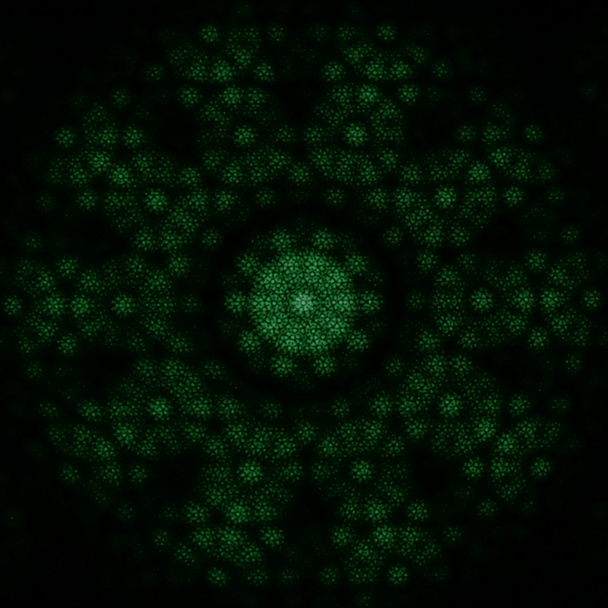
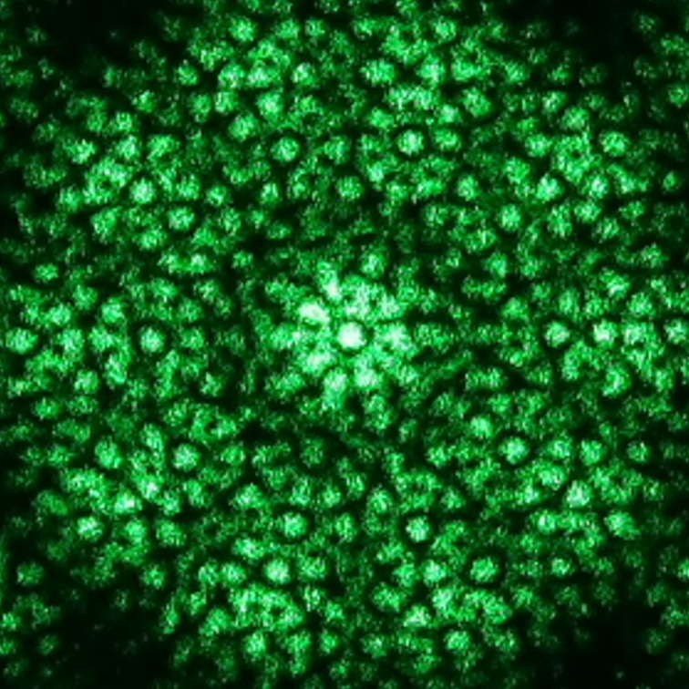
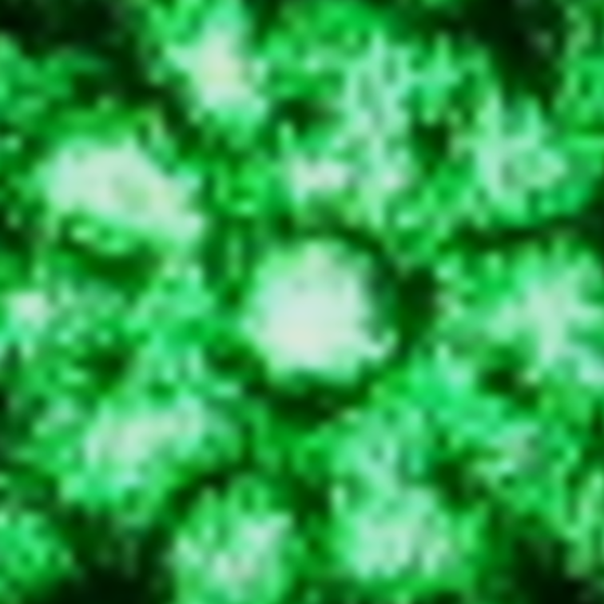
SIMULATION
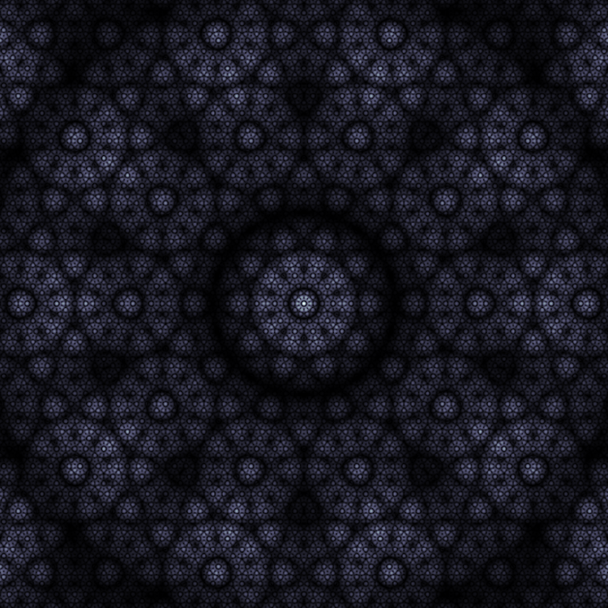
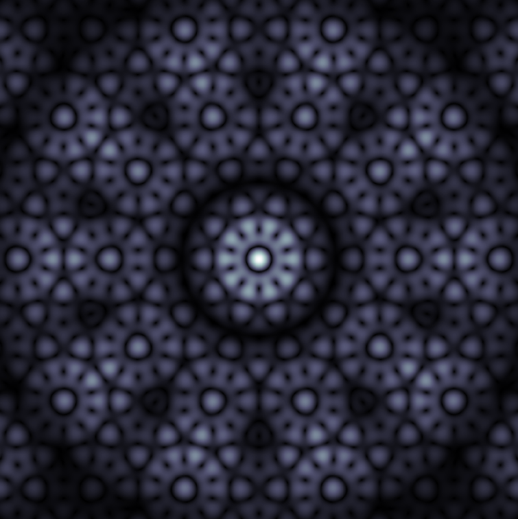
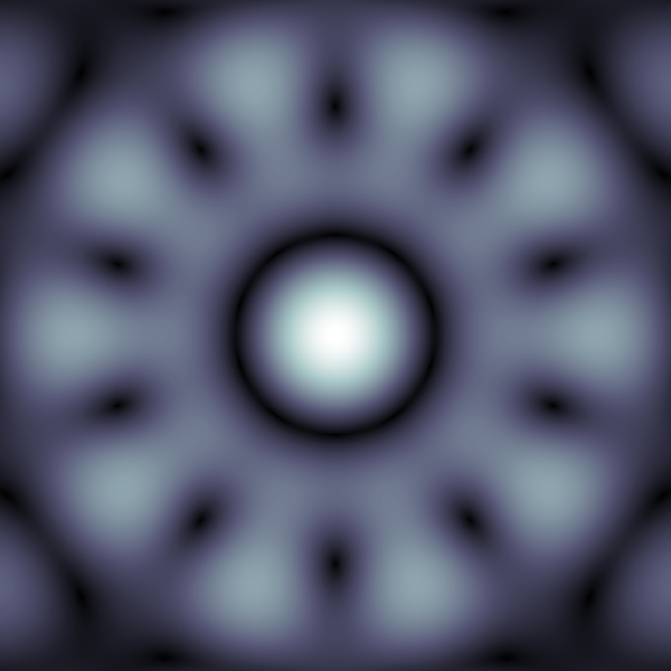
INTERPRETATION相同 Q-number 配置於不同空間尺度，使相同的 Q-fold symmetry 在階層結構中重複出現，形成跨尺度的 self-similar structure。
CASE 02 · DIFFERENT Q
Embedded symmetry changes with scale
Q1 = 5 · Q2 = 4 · Q3 = 3
不同 Q-number 被嵌入不同階層尺度，形成同一組三階波源配置。
Original×6×36
EXPERIMENT
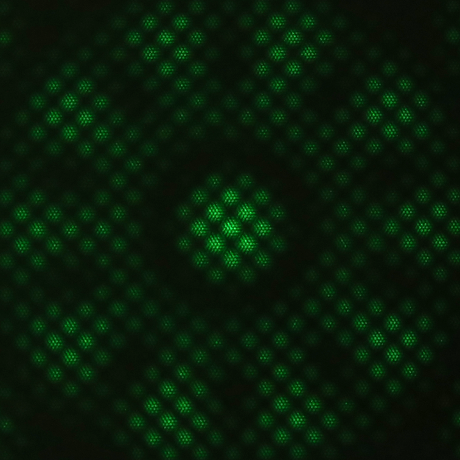
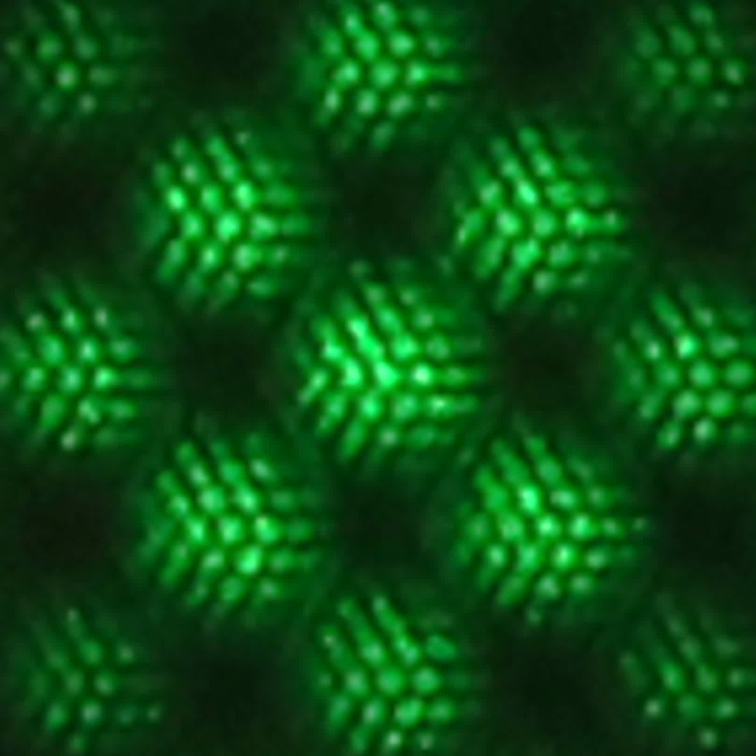
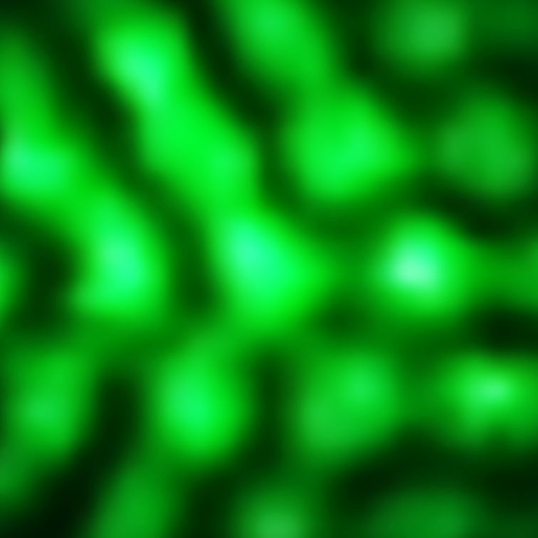
SIMULATION
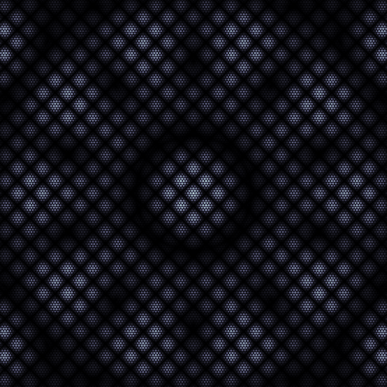
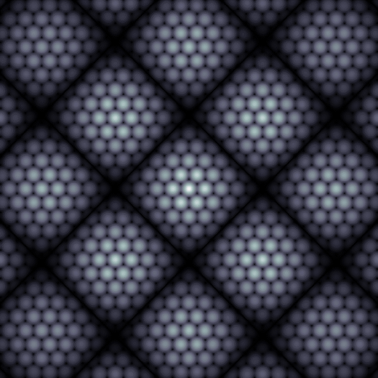
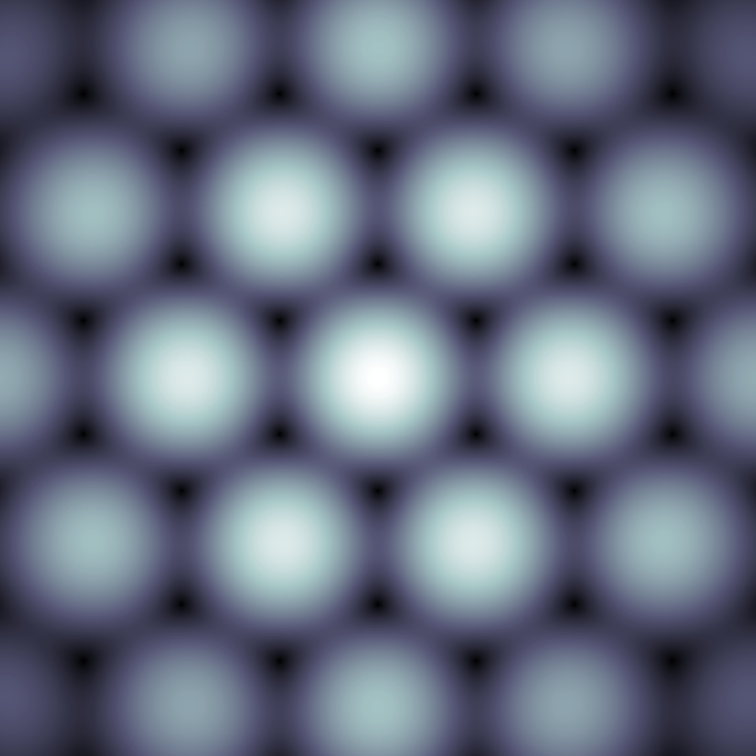
INTERPRETATION不同 Q-number 被配置於不同階層尺度；隨觀察尺度改變，遠場結構呈現不同的 rotational symmetry features，形成 scale-dependent embedded symmetry。
04 / RESEARCH MATERIALS
For deeper reading.
Three research records capture different stages of the work—from experimental development and presentation to the later formulation of the research framework.
EXPERIMENTAL DEVELOPMENT
Undergraduate Project Report
從 single-order Q-fold interference 出發，逐步發展至 dual- 與 triple-order hierarchical structures，完整記錄 photomask design、實驗結果、MATLAB reconstruction 與分析過程。
Experimental developmentFull project report
VIEW FULL REPORT RESEARCH PRESENTATION
Oral Defense Slides
以簡報形式整理研究動機、structured light 背景、實驗架構、source / photomask design 與主要結果，提供專題研究內容的視覺化脈絡。
Presentation recordOral defense
VIEW PRESENTATION CONCEPTUAL DEVELOPMENT
Later Manuscript Draft
專題完成後，進一步將階層式干涉結構整理為 recursive Q-fold interference framework，並建立模型與數學形式可拓展至 Nth-order 的描述。
Manuscript draftConceptual development
VIEW MANUSCRIPT 05 / ABOUT
劉恆睿
When I encounter an unfamiliar problem, I try to build a way to solve it.
面對尚未有現成解法的問題，我習慣先把問題拆解，再從實驗設計、數值模擬與實際製作中建立可以驗證的解法。從課程專題中的 coding、CNC 與實驗製作，到大學專題中建立 source geometry、MATLAB reconstruction 並與實驗結果相互檢驗，這種從問題出發、建立方法並持續修正的過程，是我最主要的研究方式。